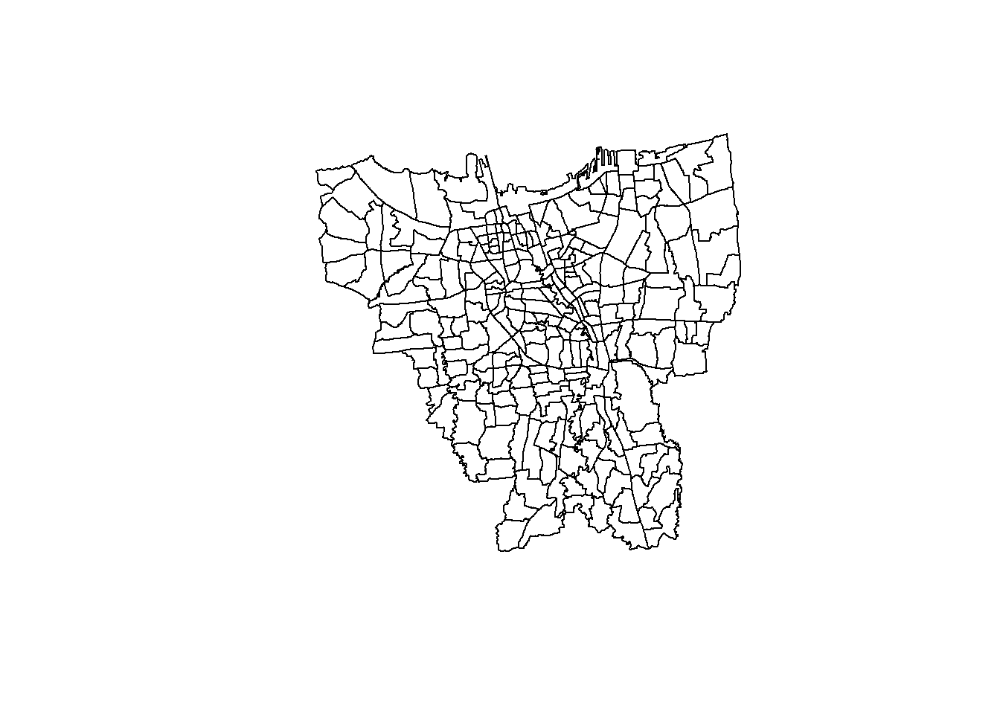
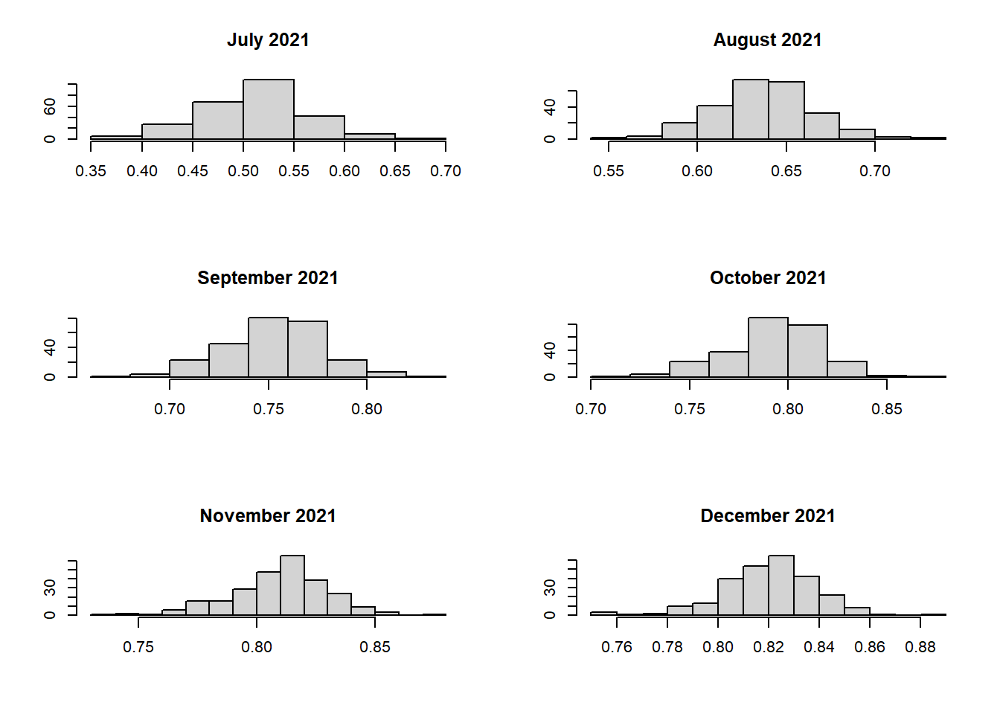
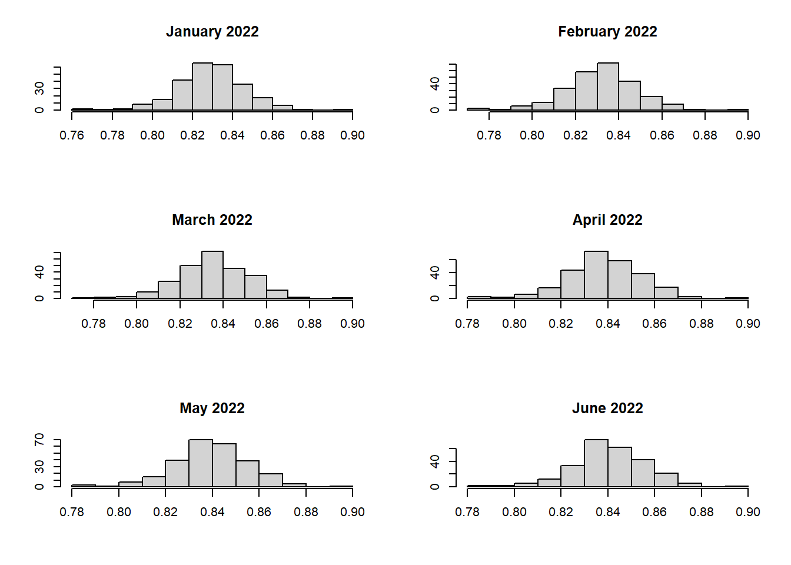
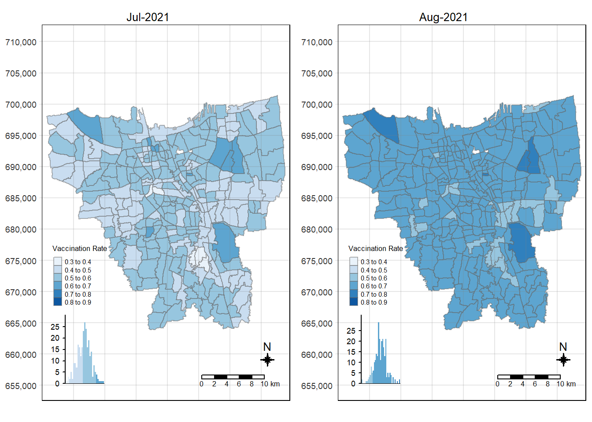
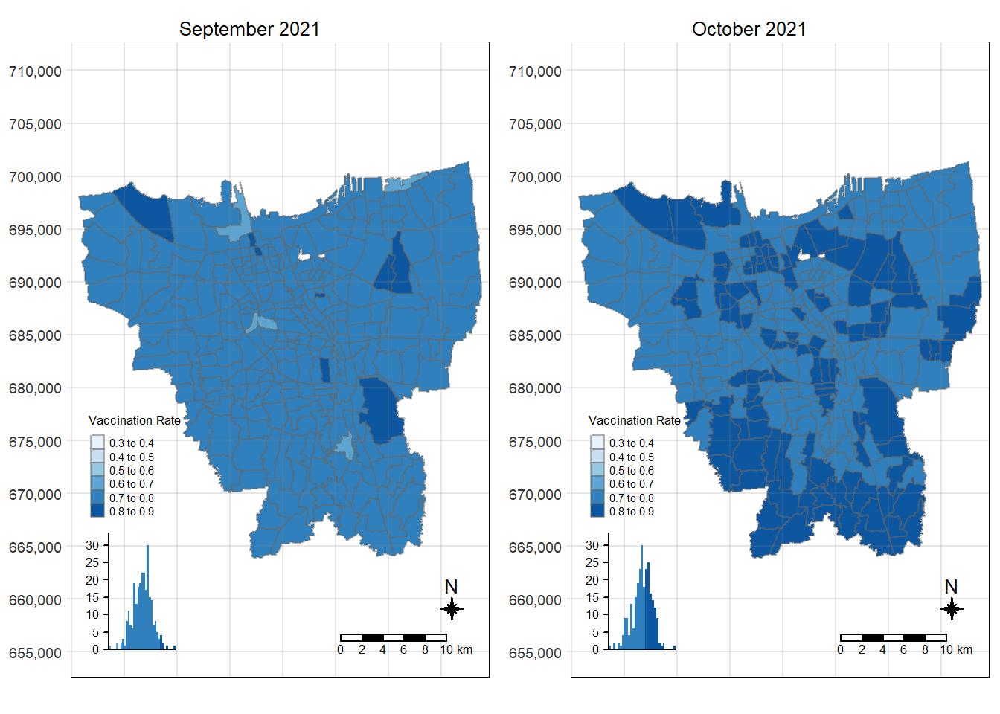
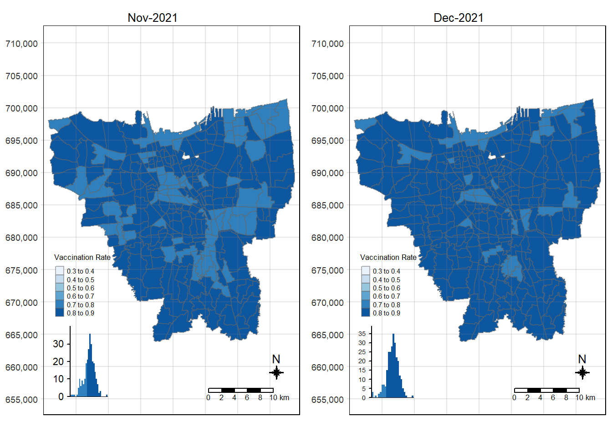
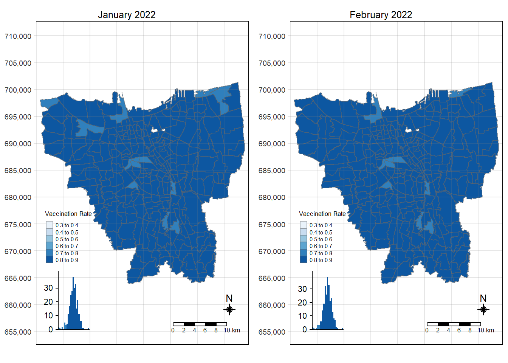
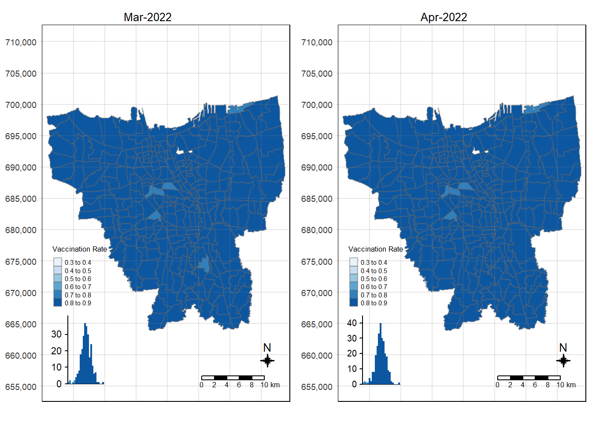
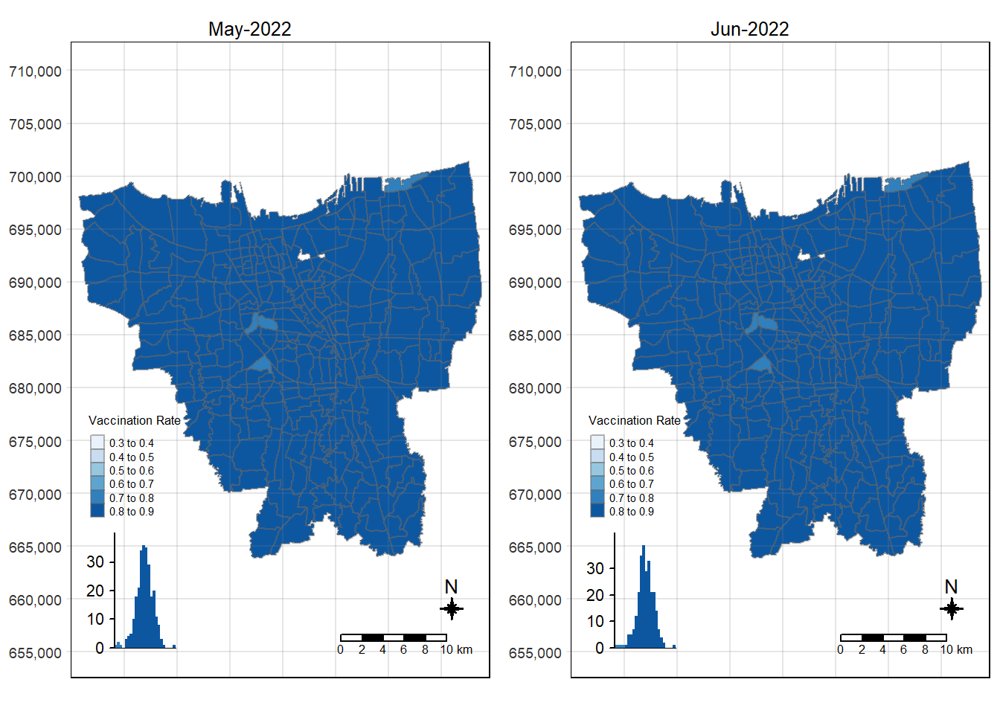

pacman::p_load(sf, sfdep, tidyverse, tmap, hash, moments)Take Home Exercise 02: Spatio-temporal Analysis of COVID-19 Vaccination Trends at the Sub-district Level, DKI Jakarta
1 Problem Context
In late December 2019, the COVID-19 outbreak was reported in Wuhan, China, which had subsequently affected 210 countries worldwide. COVID-19 can be deadly with a 2% case fatality rate.
In response to this, Indonesia commenced its COVID-19 vaccination program on 13 January 2021, and as of 5 February 2023, over 204 million people had received the first dose of the vaccine, and over 175 million people had been fully vaccinated, with Jakarta having the highest percentage of population fully vaccinated.
However despite its compactness, the cumulative vaccination rate are not evenly distributed within DKI Jakarta. The question is where are the sub-districts with a relatively higher number of vaccination rate and how have they changed over time.
The assignment can be found here.
2 Objectives
Exploratory Spatial Data Analysis (ESDA) holds tremendous potential to address complex problems facing society. In this study, we will need to use it to uncover the spatio-temporal trends of COVID-19 vaccination in DKI Jakarta namely:
Choropleth Mapping and Analysis
Local Gi* Analysis
Emerging Hot Spot Analysis (EHSA)
3 Setup
3.1 Packages used
These are the R packages that we’ll need for our analyses:
sf - used for importing, managing, and processing geospatial data
sfdep - an
sfandtidyversefriendly interface to compute spatial dependencetidyverse - collection of packages for performing data science tasks such as importing, wrangling, and visualising data
tmap - for plotting cartographic quality static point patterns maps or interactive maps by using leaflet API
readxl - for reading .xlsx files. It is part of the
tidyversecollection.hash - used to create a hash object. I have used this to convert the month spelling from Bahasa Indonesia to English. This is done so that when the data is visualised it is clear to all.
moments - used to call the
skewness()function to calculate skewness of the data.
3.2 Datasets used
| Type | Name | Format | Description |
|---|---|---|---|
| Geospatial | DKI Jakarta Provincial Village Boundary | .shp | District level boundary in DKI Jakarta. Please take note that the data is from 2019. |
| Aspatial | District Based Vaccination History | .xlsx | Daily .csv files containing all vaccinations done at the sub-district level (i.e., kelurahan) in DKI Jakarta. The files consider the number of doses given to the following groups of people:
|
4 Data Wrangling: Geospatial Data
4.1 Importing Geospatial Data
jakarta <- st_read(dsn="data/geospatial",
layer="BATAS_DESA_DESEMBER_2019_DUKCAPIL_DKI_JAKARTA")Reading layer `BATAS_DESA_DESEMBER_2019_DUKCAPIL_DKI_JAKARTA' from data source
`C:\guga-nesh\IS415-GAA\take-home_ex\take-home_ex02\data\geospatial'
using driver `ESRI Shapefile'
Simple feature collection with 269 features and 161 fields
Geometry type: MULTIPOLYGON
Dimension: XY
Bounding box: xmin: 106.3831 ymin: -6.370815 xmax: 106.9728 ymax: -5.184322
Geodetic CRS: WGS 84Information gathered on jakarta :
Data Type: sf collection
Geometry Type: Multipolygon
Shape: 269 features, 161 fields
CRS: WGS 84 - ‘The World Geodetic System (WGS)’.
Note
The assigned CRS does not seem appropriate. In fact, the assignment requires us to re-assign the CRS to DGN95. We’ll fix this in Section 4.2.3.
4.2 Data pre-processing
Before we can visualise our data, we need to ensure that the data is validated by handling invalid geometries and missing values.
This section was done by referencing sample submissions done by two seniors, credit to:
Afterwards, we can work on doing the pre-processing on the jakarta data as per the requirements of the assignment.
4.2.1 Handling invalid geometries
length(which(st_is_valid(jakarta) == FALSE))[1] 0
Note
st_is_valid() checks whether a geometry is valid. It returns a logical vector indicating for each geometries of jakarta whether it is valid. The documentation for this can be found here.
From the above output, we can see that the geometry is valid 👍
4.2.2 Handling missing values
jakarta[rowSums(is.na(jakarta))!=0,]Simple feature collection with 2 features and 161 fields
Geometry type: MULTIPOLYGON
Dimension: XY
Bounding box: xmin: 106.8412 ymin: -6.154036 xmax: 106.8612 ymax: -6.144973
Geodetic CRS: WGS 84
OBJECT_ID KODE_DESA DESA KODE PROVINSI KAB_KOTA KECAMATAN
243 25645 31888888 DANAU SUNTER 318888 DKI JAKARTA <NA> <NA>
244 25646 31888888 DANAU SUNTER DLL 318888 DKI JAKARTA <NA> <NA>
DESA_KELUR JUMLAH_PEN JUMLAH_KK LUAS_WILAY KEPADATAN PERPINDAHA JUMLAH_MEN
243 <NA> 0 0 0 0 0 0
244 <NA> 0 0 0 0 0 0
PERUBAHAN WAJIB_KTP SILAM KRISTEN KHATOLIK HINDU BUDHA KONGHUCU KEPERCAYAA
243 0 0 0 0 0 0 0 0 0
244 0 0 0 0 0 0 0 0 0
PRIA WANITA BELUM_KAWI KAWIN CERAI_HIDU CERAI_MATI U0 U5 U10 U15 U20 U25
243 0 0 0 0 0 0 0 0 0 0 0 0
244 0 0 0 0 0 0 0 0 0 0 0 0
U30 U35 U40 U45 U50 U55 U60 U65 U70 U75 TIDAK_BELU BELUM_TAMA TAMAT_SD SLTP
243 0 0 0 0 0 0 0 0 0 0 0 0 0 0
244 0 0 0 0 0 0 0 0 0 0 0 0 0 0
SLTA DIPLOMA_I DIPLOMA_II DIPLOMA_IV STRATA_II STRATA_III BELUM_TIDA
243 0 0 0 0 0 0 0
244 0 0 0 0 0 0 0
APARATUR_P TENAGA_PEN WIRASWASTA PERTANIAN NELAYAN AGAMA_DAN PELAJAR_MA
243 0 0 0 0 0 0 0
244 0 0 0 0 0 0 0
TENAGA_KES PENSIUNAN LAINNYA GENERATED KODE_DES_1 BELUM_ MENGUR_ PELAJAR_
243 0 0 0 <NA> <NA> 0 0 0
244 0 0 0 <NA> <NA> 0 0 0
PENSIUNA_1 PEGAWAI_ TENTARA KEPOLISIAN PERDAG_ PETANI PETERN_ NELAYAN_1
243 0 0 0 0 0 0 0 0
244 0 0 0 0 0 0 0 0
INDUSTR_ KONSTR_ TRANSP_ KARYAW_ KARYAW1 KARYAW1_1 KARYAW1_12 BURUH BURUH_
243 0 0 0 0 0 0 0 0 0
244 0 0 0 0 0 0 0 0 0
BURUH1 BURUH1_1 PEMBANT_ TUKANG TUKANG_1 TUKANG_12 TUKANG__13 TUKANG__14
243 0 0 0 0 0 0 0 0
244 0 0 0 0 0 0 0 0
TUKANG__15 TUKANG__16 TUKANG__17 PENATA PENATA_ PENATA1_1 MEKANIK SENIMAN_
243 0 0 0 0 0 0 0 0
244 0 0 0 0 0 0 0 0
TABIB PARAJI_ PERANCA_ PENTER_ IMAM_M PENDETA PASTOR WARTAWAN USTADZ JURU_M
243 0 0 0 0 0 0 0 0 0 0
244 0 0 0 0 0 0 0 0 0 0
PROMOT ANGGOTA_ ANGGOTA1 ANGGOTA1_1 PRESIDEN WAKIL_PRES ANGGOTA1_2
243 0 0 0 0 0 0 0
244 0 0 0 0 0 0 0
ANGGOTA1_3 DUTA_B GUBERNUR WAKIL_GUBE BUPATI WAKIL_BUPA WALIKOTA WAKIL_WALI
243 0 0 0 0 0 0 0 0
244 0 0 0 0 0 0 0 0
ANGGOTA1_4 ANGGOTA1_5 DOSEN GURU PILOT PENGACARA_ NOTARIS ARSITEK AKUNTA_
243 0 0 0 0 0 0 0 0 0
244 0 0 0 0 0 0 0 0 0
KONSUL_ DOKTER BIDAN PERAWAT APOTEK_ PSIKIATER PENYIA_ PENYIA1 PELAUT
243 0 0 0 0 0 0 0 0 0
244 0 0 0 0 0 0 0 0 0
PENELITI SOPIR PIALAN PARANORMAL PEDAGA_ PERANG_ KEPALA_ BIARAW_ WIRASWAST_
243 0 0 0 0 0 0 0 0 0
244 0 0 0 0 0 0 0 0 0
LAINNYA_12 LUAS_DESA KODE_DES_3 DESA_KEL_1 KODE_12
243 0 0 <NA> <NA> 0
244 0 0 <NA> <NA> 0
geometry
243 MULTIPOLYGON (((106.8612 -6...
244 MULTIPOLYGON (((106.8504 -6...
Note
From the output shown above we can see that there are NA values 👎
In fact, there are two rows with missing values. However, it’s hard to tell which columns the NA values are in since the output is so long and messy. Let’s just retrieve the columns with missing values.
names(which(colSums(is.na(jakarta))>0))[1] "KAB_KOTA" "KECAMATAN" "DESA_KELUR" "GENERATED" "KODE_DES_1"
[6] "KODE_DES_3" "DESA_KEL_1"
Note
colSum() helps form sum for data frame by column. Please refer to the documentation here.
which() gives the TRUE indices of a logical object, allowing for array indices. Please refer to the documentation here.
names() is used to get or set the names of an object. Please refer to the documentation here.
There are two rows with missing values in the columns shown above. Let’s see what they mean… Google Translate tells us that: 🤔
“KAB_KOTA” = REGENCY_CITY
“KECAMATAN” = SUB-DISTRICT
“DESA_KELUR” = VILLAGE_KELUR
We can remove all rows with missing values under the “DESA_KELUR” (i.e., VILLAGE level) column since we are only interested in the sub-district and potentially city level data.
Note
Later we find out that the definition of these columns by Google Translate are not 100% accurate. But it’s okay as this does not affect our analysis for now.
Nonetheless, it should be noted that in this particular case removing the missing values from any of the columns will yield the same result.
jakarta <- na.omit(jakarta, c("DESA_KELUR"))
Note
na.omit() is used to handle missing values in objects. In this case, we input the object(must be an R object) and the target.colnames (a vector of names for the target columns to operate upon, if present in object. Please refer to the documentation here.
Let’s check if we have removed the rows with missing values:
jakarta[rowSums(is.na(jakarta))!=0,]Simple feature collection with 0 features and 161 fields
Bounding box: xmin: NA ymin: NA xmax: NA ymax: NA
Geodetic CRS: WGS 84
[1] OBJECT_ID KODE_DESA DESA KODE PROVINSI KAB_KOTA
[7] KECAMATAN DESA_KELUR JUMLAH_PEN JUMLAH_KK LUAS_WILAY KEPADATAN
[13] PERPINDAHA JUMLAH_MEN PERUBAHAN WAJIB_KTP SILAM KRISTEN
[19] KHATOLIK HINDU BUDHA KONGHUCU KEPERCAYAA PRIA
[25] WANITA BELUM_KAWI KAWIN CERAI_HIDU CERAI_MATI U0
[31] U5 U10 U15 U20 U25 U30
[37] U35 U40 U45 U50 U55 U60
[43] U65 U70 U75 TIDAK_BELU BELUM_TAMA TAMAT_SD
[49] SLTP SLTA DIPLOMA_I DIPLOMA_II DIPLOMA_IV STRATA_II
[55] STRATA_III BELUM_TIDA APARATUR_P TENAGA_PEN WIRASWASTA PERTANIAN
[61] NELAYAN AGAMA_DAN PELAJAR_MA TENAGA_KES PENSIUNAN LAINNYA
[67] GENERATED KODE_DES_1 BELUM_ MENGUR_ PELAJAR_ PENSIUNA_1
[73] PEGAWAI_ TENTARA KEPOLISIAN PERDAG_ PETANI PETERN_
[79] NELAYAN_1 INDUSTR_ KONSTR_ TRANSP_ KARYAW_ KARYAW1
[85] KARYAW1_1 KARYAW1_12 BURUH BURUH_ BURUH1 BURUH1_1
[91] PEMBANT_ TUKANG TUKANG_1 TUKANG_12 TUKANG__13 TUKANG__14
[97] TUKANG__15 TUKANG__16 TUKANG__17 PENATA PENATA_ PENATA1_1
[103] MEKANIK SENIMAN_ TABIB PARAJI_ PERANCA_ PENTER_
[109] IMAM_M PENDETA PASTOR WARTAWAN USTADZ JURU_M
[115] PROMOT ANGGOTA_ ANGGOTA1 ANGGOTA1_1 PRESIDEN WAKIL_PRES
[121] ANGGOTA1_2 ANGGOTA1_3 DUTA_B GUBERNUR WAKIL_GUBE BUPATI
[127] WAKIL_BUPA WALIKOTA WAKIL_WALI ANGGOTA1_4 ANGGOTA1_5 DOSEN
[133] GURU PILOT PENGACARA_ NOTARIS ARSITEK AKUNTA_
[139] KONSUL_ DOKTER BIDAN PERAWAT APOTEK_ PSIKIATER
[145] PENYIA_ PENYIA1 PELAUT PENELITI SOPIR PIALAN
[151] PARANORMAL PEDAGA_ PERANG_ KEPALA_ BIARAW_ WIRASWAST_
[157] LAINNYA_12 LUAS_DESA KODE_DES_3 DESA_KEL_1 KODE_12 geometry
<0 rows> (or 0-length row.names)Looks good! 😎 But we still have 3 other pre-processing steps to do…
4.2.3 Re-assign Coordinate Reference System (CRS)
The CRS of jakarta is WGS 84. The assignment requires us to use the national CRS of Indonesia ( DGN95 / Indonesia TM-3 zone 54.1) since our dataset is specific to Indonesia.
st_crs(jakarta)Coordinate Reference System:
User input: WGS 84
wkt:
GEOGCRS["WGS 84",
DATUM["World Geodetic System 1984",
ELLIPSOID["WGS 84",6378137,298.257223563,
LENGTHUNIT["metre",1]]],
PRIMEM["Greenwich",0,
ANGLEUNIT["degree",0.0174532925199433]],
CS[ellipsoidal,2],
AXIS["latitude",north,
ORDER[1],
ANGLEUNIT["degree",0.0174532925199433]],
AXIS["longitude",east,
ORDER[2],
ANGLEUNIT["degree",0.0174532925199433]],
ID["EPSG",4326]]Let’s re-assign using EPSG code 23845 and check the results.
jakarta <- st_transform(jakarta, 23845)
st_crs(jakarta)Coordinate Reference System:
User input: EPSG:23845
wkt:
PROJCRS["DGN95 / Indonesia TM-3 zone 54.1",
BASEGEOGCRS["DGN95",
DATUM["Datum Geodesi Nasional 1995",
ELLIPSOID["WGS 84",6378137,298.257223563,
LENGTHUNIT["metre",1]]],
PRIMEM["Greenwich",0,
ANGLEUNIT["degree",0.0174532925199433]],
ID["EPSG",4755]],
CONVERSION["Indonesia TM-3 zone 54.1",
METHOD["Transverse Mercator",
ID["EPSG",9807]],
PARAMETER["Latitude of natural origin",0,
ANGLEUNIT["degree",0.0174532925199433],
ID["EPSG",8801]],
PARAMETER["Longitude of natural origin",139.5,
ANGLEUNIT["degree",0.0174532925199433],
ID["EPSG",8802]],
PARAMETER["Scale factor at natural origin",0.9999,
SCALEUNIT["unity",1],
ID["EPSG",8805]],
PARAMETER["False easting",200000,
LENGTHUNIT["metre",1],
ID["EPSG",8806]],
PARAMETER["False northing",1500000,
LENGTHUNIT["metre",1],
ID["EPSG",8807]]],
CS[Cartesian,2],
AXIS["easting (X)",east,
ORDER[1],
LENGTHUNIT["metre",1]],
AXIS["northing (Y)",north,
ORDER[2],
LENGTHUNIT["metre",1]],
USAGE[
SCOPE["Cadastre."],
AREA["Indonesia - onshore east of 138°E."],
BBOX[-9.19,138,-1.49,141.01]],
ID["EPSG",23845]]4.2.4 Exclude all outer islands from jakarta
The assignment requires us to remove all outer islands from jakarta. Let’s plot the geometry of jakarta to see what we’re working with.
plot(jakarta['geometry'])
From the visualisation above, we can see that there are some outer islands scattered towards the north. Let’s remove them.
In Section 4.2.2, we saw that the data is grouped by KAB_KOTA (i.e., CITY), KECAMATAN (i.e., SUB-DISTRICT), and DESA_KELUR (i.e., “VILLAGE”). Let’s see the different cities we have in DKI Jakarta.
unique(jakarta$KAB_KOTA)[1] "JAKARTA BARAT" "JAKARTA PUSAT" "KEPULAUAN SERIBU" "JAKARTA UTARA"
[5] "JAKARTA TIMUR" "JAKARTA SELATAN" The output shows us that there are 6 different cities in DKI Jakarta. 5 of them are prefixed with the string “JAKARTA” while one of them isn’t. Let’s plot this data to see if the one without the prefix represents the outer islands.
tm_shape(jakarta) +
tm_polygons("KAB_KOTA")
It seems our suspicions are correct, the outer islands are those cities without the “JAKARTA” prefix. In fact, according to Google Translate, “KEPULAUAN SEBIRU” can be directly translated to “Thousand Islands” in English. Let’s remove them and check the results.
jakarta <- jakarta %>% filter(grepl("JAKARTA", KAB_KOTA))
unique(jakarta$KAB_KOTA)[1] "JAKARTA BARAT" "JAKARTA PUSAT" "JAKARTA UTARA" "JAKARTA TIMUR"
[5] "JAKARTA SELATAN"
Note
grepl() is used to search for matches to argument pattern (in our case its “JAKARTA”) within each element of a character vector. Please find the documentation here.
plot(jakarta$geometry)
Looks good! 😎
4.2.5 Retain first nine fields in jakarta
The assignment requires us to only retain the first 9 fields of the sf data frame. Let’s do this.
jakarta <- jakarta[,0:9]
jakartaSimple feature collection with 261 features and 9 fields
Geometry type: MULTIPOLYGON
Dimension: XY
Bounding box: xmin: -3644275 ymin: 663887.8 xmax: -3606237 ymax: 701380.1
Projected CRS: DGN95 / Indonesia TM-3 zone 54.1
First 10 features:
OBJECT_ID KODE_DESA DESA KODE PROVINSI KAB_KOTA
1 25477 3173031006 KEAGUNGAN 317303 DKI JAKARTA JAKARTA BARAT
2 25478 3173031007 GLODOK 317303 DKI JAKARTA JAKARTA BARAT
3 25397 3171031003 HARAPAN MULIA 317103 DKI JAKARTA JAKARTA PUSAT
4 25400 3171031006 CEMPAKA BARU 317103 DKI JAKARTA JAKARTA PUSAT
5 25390 3171021001 PASAR BARU 317102 DKI JAKARTA JAKARTA PUSAT
6 25391 3171021002 KARANG ANYAR 317102 DKI JAKARTA JAKARTA PUSAT
7 25394 3171021005 MANGGA DUA SELATAN 317102 DKI JAKARTA JAKARTA PUSAT
8 25386 3171011003 PETOJO UTARA 317101 DKI JAKARTA JAKARTA PUSAT
9 25403 3171041001 SENEN 317104 DKI JAKARTA JAKARTA PUSAT
10 25408 3171041006 BUNGUR 317104 DKI JAKARTA JAKARTA PUSAT
KECAMATAN DESA_KELUR JUMLAH_PEN geometry
1 TAMAN SARI KEAGUNGAN 21609 MULTIPOLYGON (((-3626874 69...
2 TAMAN SARI GLODOK 9069 MULTIPOLYGON (((-3627130 69...
3 KEMAYORAN HARAPAN MULIA 29085 MULTIPOLYGON (((-3621251 68...
4 KEMAYORAN CEMPAKA BARU 41913 MULTIPOLYGON (((-3620608 69...
5 SAWAH BESAR PASAR BARU 15793 MULTIPOLYGON (((-3624097 69...
6 SAWAH BESAR KARANG ANYAR 33383 MULTIPOLYGON (((-3624785 69...
7 SAWAH BESAR MANGGA DUA SELATAN 35906 MULTIPOLYGON (((-3624752 69...
8 GAMBIR PETOJO UTARA 21828 MULTIPOLYGON (((-3626121 69...
9 SENEN SENEN 8643 MULTIPOLYGON (((-3623189 69...
10 SENEN BUNGUR 23001 MULTIPOLYGON (((-3622451 69...From the assignment we know that the ninth field is “JUMLAH_PEN”. The output generated above matches this information.
4.2.6 Rename Columns for better understanding
For better understanding of the data, let us rename the columns to their English translation. For this we will use the rename() function.
Note
Since Google Translate has been giving me contradicting answers 😓, I have decided to use this wiki page as a guide.
# take note of the hierarchy of subdivisions of Indonesia
jakarta <- jakarta %>%
dplyr::rename(
object_id = OBJECT_ID,
village_code = KODE_DESA,
# fifth level
village = DESA,
code = KODE,
# first level
province = PROVINSI,
# second level
city = KAB_KOTA,
# third level
district = KECAMATAN,
# fourth level - assumption made: KELUR = KELURAHAN
sub_district = DESA_KELUR,
total_population = JUMLAH_PEN
)
Note
rename() is a method under the dplyr library. It changes the names of individual variables using the new_name = old_name syntax.
side note: rename_with() renames columns using a function. Please refer to the documentation here.
We have completed the data pre-processing steps for the geospatial data 🥳 Let’s move on to the aspatial data.
5 Data Wrangling: Aspatial Data
In this section, we’ll be importing and performing some basic pre-processing on the COVID-19 vaccination datasets.
5.1 Importing Aspatial Data
The assignment requires us to compute the vaccination rate from July 2021 to June 2022 at the sub-district (i.e., kelurahan) level.
Important
We will be taking the data compiled on the last day of each month to retrieve the monthly records of COVID-19 vaccinations from the above-mentioned time period.
5.1.1 Primary Data Exploration
Since we will need to import 12 files (which is a lot), let’s look at the structure of one of them to figure what kind of data we have and how we can pre-process it moving forward.
july_2021 <- readxl::read_xlsx("data/aspatial/Data Vaksinasi Berbasis Kelurahan (31 Juli 2021).xlsx")
glimpse(july_2021)Rows: 268
Columns: 27
$ `KODE KELURAHAN` <chr> NA, "3172051003", "317304…
$ `WILAYAH KOTA` <chr> NA, "JAKARTA UTARA", "JAK…
$ KECAMATAN <chr> NA, "PADEMANGAN", "TAMBOR…
$ KELURAHAN <chr> "TOTAL", "ANCOL", "ANGKE"…
$ SASARAN <dbl> 8941211, 23947, 29381, 29…
$ `BELUM VAKSIN` <dbl> 4441501, 12333, 13875, 18…
$ `JUMLAH\r\nDOSIS 1` <dbl> 4499710, 11614, 15506, 10…
$ `JUMLAH\r\nDOSIS 2` <dbl> 1663218, 4181, 4798, 3658…
$ `TOTAL VAKSIN\r\nDIBERIKAN` <dbl> 6162928, 15795, 20304, 14…
$ `LANSIA\r\nDOSIS 1` <dbl> 502579, 1230, 2012, 865, …
$ `LANSIA\r\nDOSIS 2` <dbl> 440910, 1069, 1729, 701, …
$ `LANSIA TOTAL \r\nVAKSIN DIBERIKAN` <dbl> 943489, 2299, 3741, 1566,…
$ `PELAYAN PUBLIK\r\nDOSIS 1` <dbl> 1052883, 3333, 2586, 2837…
$ `PELAYAN PUBLIK\r\nDOSIS 2` <dbl> 666009, 2158, 1374, 1761,…
$ `PELAYAN PUBLIK TOTAL\r\nVAKSIN DIBERIKAN` <dbl> 1718892, 5491, 3960, 4598…
$ `GOTONG ROYONG\r\nDOSIS 1` <dbl> 56660, 78, 122, 174, 71, …
$ `GOTONG ROYONG\r\nDOSIS 2` <dbl> 38496, 51, 84, 106, 57, 7…
$ `GOTONG ROYONG TOTAL\r\nVAKSIN DIBERIKAN` <dbl> 95156, 129, 206, 280, 128…
$ `TENAGA KESEHATAN\r\nDOSIS 1` <dbl> 76397, 101, 90, 215, 73, …
$ `TENAGA KESEHATAN\r\nDOSIS 2` <dbl> 67484, 91, 82, 192, 67, 3…
$ `TENAGA KESEHATAN TOTAL\r\nVAKSIN DIBERIKAN` <dbl> 143881, 192, 172, 407, 14…
$ `TAHAPAN 3\r\nDOSIS 1` <dbl> 2279398, 5506, 9012, 5408…
$ `TAHAPAN 3\r\nDOSIS 2` <dbl> 446028, 789, 1519, 897, 4…
$ `TAHAPAN 3 TOTAL\r\nVAKSIN DIBERIKAN` <dbl> 2725426, 6295, 10531, 630…
$ `REMAJA\r\nDOSIS 1` <dbl> 531793, 1366, 1684, 1261,…
$ `REMAJA\r\nDOSIS 2` <dbl> 4291, 23, 10, 1, 1, 8, 6,…
$ `REMAJA TOTAL\r\nVAKSIN DIBERIKAN` <dbl> 536084, 1389, 1694, 1262,…
Note
read_xlsx() reads data from a .xlsx file. This function is from the readxl library under the tidyverse collection.
glimpse() makes it easier to see every column in a data frame. Please refer to the documentation here.
Information gathered on july_2021:
Data Type: tibble data frame
Shape: 268 entries, 27 columns
There seems to be a quite a few columns…🤔
We will only need to take the “KELURAHAN” (i.e., sub- district level) , “SASARAN” (i.e., target) and the “BELUM VAKSIN” (i.e., number of people who have not been vaccinated yet) columns to calculate the vaccination rate for each month. We will look at how we can calculate this in Section 5.1.2.
I learnt that only these columns were necessary for our analysis after receiving some advice from Professor Kam Tin Seong. Thank you so much for your guidance prof! 😃
5.1.2 Creating a function to process our Aspatial Data
First, let us get all the file names for our aspatial data.
setwd("data/aspatial")
library(readxl)
file.list <- list.files(pattern = "*.xlsx")
file.list [1] "Data Vaksinasi Berbasis Kelurahan (27 Februari 2022).xlsx"
[2] "Data Vaksinasi Berbasis Kelurahan (30 April 2022).xlsx"
[3] "Data Vaksinasi Berbasis Kelurahan (30 Juni 2022).xlsx"
[4] "Data Vaksinasi Berbasis Kelurahan (30 November 2021).xlsx"
[5] "Data Vaksinasi Berbasis Kelurahan (30 September 2021).xlsx"
[6] "Data Vaksinasi Berbasis Kelurahan (31 Agustus 2021).xlsx"
[7] "Data Vaksinasi Berbasis Kelurahan (31 Desember 2021).xlsx"
[8] "Data Vaksinasi Berbasis Kelurahan (31 Januari 2022).xlsx"
[9] "Data Vaksinasi Berbasis Kelurahan (31 Juli 2021).xlsx"
[10] "Data Vaksinasi Berbasis Kelurahan (31 Maret 2022).xlsx"
[11] "Data Vaksinasi Berbasis Kelurahan (31 Mei 2022).xlsx"
[12] "Data Vaksinasi Berbasis Kelurahan (31 Oktober 2021).xlsx"
Note
The above code chunk was referenced from stackoverflow. Credit to Jaap for his detailed answer there.
setwd("dir") is used to set the working directory to string “dir”. Please refer to the documentation here.
library() loads and attaches add-on packages. In this case, we need to use to read_excel() from readxl. Hence, we have loaded in that package. Please refer to the documentation here.
list.files() is used to generate a vector of file names in the specified directory (from setwd()) with the pattern (“*.xlsx”). Please refer to the documentation here.
Now, we are ready to create a function that processes all the files and merges all the data into a single sf data frame. Our output after all the pre-processing should look something like this:

We will be using two functions to achieve the above-shown skeleton of the data frame:
get_month_year()- this is used to get the English month and year of each file. The output will be put into the final data frame under the “MONTH.YEAR” columnaspatial_data_processing()- this is used to process the data. The following steps are done:Keep the necessary columns only (i.e., “KODE.KELURAHAN”, “KELURAHAN”, “SASARAN”, “BELUM.VAKSIN”). We need the “KODE.KELURAHAN” column to join the processed aspatial data with the processed geospatial data. We will look at how to do this in Section 6.1.
Remove the first row of the tibble data frame as it is not needed (it contains the aggregate sum of the data)
Check for duplicates and remove them (while primary exploration of data did not show duplicates, we must still be careful as not all files have been manually checked and there is a still a chance that duplicates exist)
Check for invalid data (i.e., missing values/NA) and convert them to 0 for us to perform our calculations later on.
Calculate “VACCINATION.RATE”
Create “MONTH.YEAR” column (i.e., English translation of Month and the Year of data collected)
Important
Formula for Vaccination Rate is as follows:
\(vaccination rate = (target - unvaccinated) / target\)
get_month_year <- function(filepath) {
# load hash library to get a hash object
library(hash)
# create hash object to map Bahasa Indonesian translation to English
h <- hash()
h[["Januari"]] <- "January"
h[["Februari"]] <- "February"
h[["Maret"]] <- "March"
h[["April"]] <- "April"
h[["Mei"]] <- "May"
h[["Juni"]] <- "June"
h[["Juli"]] <- "July"
h[["Agustus"]] <- "August"
h[["September"]] <- "September"
h[["Oktober"]] <- "October"
h[["November"]] <- "November"
h[["Desember"]] <- "December"
# get components of filepath to get date
components = str_split(filepath, " ")
month = h[[components[[1]][6]]]
year = gsub("[^0-9.-].", "", components[[1]][7])
return (paste(month, year, sep=" "))
}
Note
The hash library and method is used to create and work with has objects. Please refer to the documentation here.
str_split() takes a character vector and returns a list. In this case, I used it to split up the filepath of type <string> so that I could extract the month and year. Please refer to the documentation here.
gsub() performs replacement of the values specified in regex with the value you have specified. In this case, I simply replaced all the non-numerical values with an empty string. Please refer to the documentation here.
aspatial_data_processing <- function(filepath) {
vaccine_data = read_xlsx(filepath, .name_repair = "universal")
# only keep the necessary columns
vaccine_data = vaccine_data[, c("KODE.KELURAHAN", "KELURAHAN", "SASARAN", "BELUM.VAKSIN")]
# remove the first row which has the aggregate sum of vaccination numbers
vaccine_data = vaccine_data[-1, ]
# check for duplicates and remove them
vaccine_data <- vaccine_data%>%
distinct(KELURAHAN, .keep_all = TRUE)
# check for invalid data (missing values or NA) and convert them to 0
vaccine_data[is.na(vaccine_data)] <- 0
# calculate vaccination rate - (sasaran - belum vaksin)/sasaran
vaccine_data$VACCINATION.RATE = (vaccine_data$SASARAN - vaccine_data$BELUM.VAKSIN)/vaccine_data$SASARAN
# create date column
month_year <- get_month_year(filepath)
vaccine_data$MONTH.YEAR <- month_year
return(vaccine_data)
}
Note
The argument .name_repair of the read_xlsx() method is used to automatically change column names to a certain format. “universal” names are unique and syntactic. Please refer to the documentation here.
To remove duplicate values of a certain column, we can use the distinct() method. This only works for dplyr >= 0.5. Please refer to this stackoverflow link that explains more in-depth.
I have used the is.na() method to convert all NA values to 0. The vaccine_data wrapper is used to make sure we transform the data inside that variable. Please refer to the documentation here.
5.1.3 Running aspatial_data_processing() on Aspatial Data
setwd("data/aspatial")
dflist <- lapply(seq_along(file.list), function(x) aspatial_data_processing(file.list[x]))
Note
seq_along() is a built-in function in R that creates a vector that contains a sequence of numbers from 1 to the object’s length. You can find an in-depth explanation of this method here.
We used seq_along() to create a vector so we can use lapply() (which only works on lists or vectors) to apply the aspatial_data_processing() to all the files.
library(plyr)
processed_aspatial_data <- ldply(dflist, data.frame)
glimpse(processed_aspatial_data)Rows: 3,204
Columns: 6
$ KODE.KELURAHAN <chr> "3172051003", "3173041007", "3175041005", "3175031003…
$ KELURAHAN <chr> "ANCOL", "ANGKE", "BALE KAMBANG", "BALI MESTER", "BAM…
$ SASARAN <dbl> 23947, 29381, 29074, 9752, 26285, 21566, 23886, 47898…
$ BELUM.VAKSIN <dbl> 4592, 5319, 5903, 1649, 4030, 3950, 3344, 9382, 3772,…
$ VACCINATION.RATE <dbl> 0.8082432, 0.8189646, 0.7969664, 0.8309065, 0.8466806…
$ MONTH.YEAR <chr> "February 2022", "February 2022", "February 2022", "F…
Note
Here, we use the ldply() function from the plyr library to combine and return the results in a single data frame. Please refer to the documentation here.
5.1.4 Rename Columns for better understanding
processed_aspatial_data <- processed_aspatial_data %>%
dplyr::rename(
village_code = KODE.KELURAHAN,
sub_district = KELURAHAN,
target = SASARAN,
not_vaccinated = BELUM.VAKSIN,
vaccination_rate = VACCINATION.RATE,
month_year = MONTH.YEAR
)With that we have completed the Data Wrangling processes for the Aspatial Data 😎
Now, we can finally start analysing the data proper 📈
6 Task 1: Choropleth Mapping and Analysis
In Section 2 we looked at the three main objectives of this assignment. Let’s start with the first one. Please take note that we have already calculated the monthly vaccination rate from July 2021 to June 2022 in section 5.1.2.
Before we can create the choropleth maps to analyse the data we will need to combine the Spatial and Aspatial data.
6.1 Combining both data frames using left_join()
We would like to join the two data sets on the “village_code” column. Let’s take a look at the data to see if there are any discrepancies.
setdiff(processed_aspatial_data$village_code, jakarta$village_code)[1] "3101011003" "3101011002" "3101011001" "3101021003" "3101021002"
[6] "3101021001"
Note
setdiff() finds the (asymmetric) difference between two collections of objects. Please refer to the documentation here.
Hm… 🤔 while this might seem confusing at first we need to remember that we removed the outer islands from the Geospatial data in Section 4.2.4 but we didn’t do that for the Aspatial data. We don’t have to do this since left_join() helps us exclude these data automatically.
In fact, here are what these codes mean:
“3101011003” - PULAU HARAPAN
“3101011002” - PULAU KELAPA
“3101011001” - PULAU PANGGANG
“3101021003” - PULAU PARI
“3101021002” - PULAU TIDUNG
“3101021001” - PULAU UNTUNG JAWA
jakarta_vaccination_rate <- left_join(jakarta, processed_aspatial_data, by = "village_code")
Note
left_join() is a function from the dplyr library that returns all rows from X (i.e., jakarta) and all columns from X and Y (i.e., vax_data_jakarta). Please refer to the documentation here.
6.2 Mapping the Distribution of Vaccination Rate for DKI Jakarta over 12 months
6.2.1 Choosing the Data Classification Method
There are many data classification methods but the Natural Breaks (or “Jenks”) method is useful as the class breaks are iteratively created in a way that best groups similar values together and maximises the differences between classes. However this classification is not recommended for data with low variances (source).
We can use the Coefficient of Variation (CV) to check whether or variance is large or small. As a rule of thumb a CV >= 1 indicates a relatively high variation, while CV < 1 can be considered low (source).
# create a helper function to calculate CV for the different month_year(s)
print_variance <- function(data) {
different_time_periods = unique(data$month_year)
for (time_period in different_time_periods) {
temp = filter(data, `month_year` == time_period)
print(paste(time_period, '-', sd(temp$vaccination_rate)/mean(temp$vaccination_rate)))
}
}
Note
paste() is used to concatenate vectors by converting them into characters. Here we have used it to print more than 1 variable. Please refer to the documentation here.
sd() computes the standard deviation of the values in temp$vaccination_rate. Please refer to the documentation here.
mean() computes the mean of the values in temp$vaccination_rate. Please refer to the documentation here.
# call function created in the previous code chunk
print_variance(jakarta_vaccination_rate)[1] "February 2022 - 0.0204124688455782"
[1] "April 2022 - 0.0195280126426937"
[1] "June 2022 - 0.019149038400642"
[1] "November 2021 - 0.0256946444161707"
[1] "September 2021 - 0.0329776110706792"
[1] "August 2021 - 0.0450062768148874"
[1] "December 2021 - 0.0225819104823015"
[1] "January 2022 - 0.0207887827395515"
[1] "July 2021 - 0.0981352771312773"
[1] "March 2022 - 0.0198328772481761"
[1] "May 2022 - 0.0194085783913278"
[1] "October 2021 - 0.0289456339694201"From the above output, we can see that the CV for the vaccination_rate is pretty low. So maybe “Jenks” isn’t the best method.
Another data classification method is the “Equal Interval” method. As Professor Kam has mentioned in his slides, this method divides the vaccination_rate values into equally sized classes. However, we should avoid this method if the data is skewed to one end or if we have 1 or 2 really large outlier values.
So let’s check our data if it is skewed and if it has any outliers. For this, we will be using the skewness() and hist() methods to calculate the skewness and visualise the data respectively. Do note that as a rule of thumb if the skewness value is between -0.5 and 0.5 the data is relatively symmetrical.
# create a helper function to calculate skewness for the different month_year(s)
print_skewness <- function(data) {
different_time_periods = unique(data$month_year)
for (time_period in different_time_periods) {
temp = filter(data, `month_year` == time_period)
print(paste(time_period, '-', moments::skewness(temp$vaccination_rate)))
}
}
Note
skewness() computes the skewness of the data given (i.e., temp$vaccination_rate). Please refer to the documentation here.
# call function created in the previous code chunk
print_skewness(jakarta_vaccination_rate)[1] "February 2022 - -0.295699763720069"
[1] "April 2022 - -0.265297167937898"
[1] "June 2022 - -0.270797534250581"
[1] "November 2021 - -0.486301892731201"
[1] "September 2021 - -0.139155729188301"
[1] "August 2021 - 0.0964932215434923"
[1] "December 2021 - -0.392411450973568"
[1] "January 2022 - -0.349709242169843"
[1] "July 2021 - -0.0428275905167636"
[1] "March 2022 - -0.256095796585012"
[1] "May 2022 - -0.266302251476784"
[1] "October 2021 - -0.378649334850257"From the above output we can see that all the data is relatively symmetrical. 😌
Let’s plot the histograms to check if outliers are present as well!
# create a helper function to draw histogram for the different month_year(s)
hist_plot <- function(df, time_period) {
hist(filter(jakarta_vaccination_rate, `month_year` == time_period)$vaccination_rate, ylab=NULL, main=time_period, xlab=NULL)
}
Note
Code
# call function created in the previous code chunk
par(mfrow = c(3,2))
hist_plot(jakarta_vaccination_rate, "July 2021")
hist_plot(jakarta_vaccination_rate, "August 2021")
hist_plot(jakarta_vaccination_rate, "September 2021")
hist_plot(jakarta_vaccination_rate, "October 2021")
hist_plot(jakarta_vaccination_rate, "November 2021")
hist_plot(jakarta_vaccination_rate, "December 2021")
Code
# call function created in the previous code chunk
par(mfrow = c(3,2))
hist_plot(jakarta_vaccination_rate, "January 2022")
hist_plot(jakarta_vaccination_rate, "February 2022")
hist_plot(jakarta_vaccination_rate, "March 2022")
hist_plot(jakarta_vaccination_rate, "April 2022")
hist_plot(jakarta_vaccination_rate, "May 2022")
hist_plot(jakarta_vaccination_rate, "June 2022")
From our findings, we can say that the data is not skewed and there are not major outliers that we need to worry about 🥳 Hence, the “Equal Interval” method will be perfect for our choropleth maps.
6.2.2 Spatio-Temporal Mapping with custom breakpoints
To analyse the spatio-temporal change in vaccination rates over time we should use the same data classification method and use the same class intervals. This makes it easier for any comparisons to be made.
The Equal Interval data classification method will be utilised (as discussed in Section 6.2.1).
We will need to define our custom breaks to have a common classification scheme for the COVID-19 vaccination rates.
Let’s take a look at the summary statistics for vaccination rates across the 12 months to determine the breakpoints:
# summary stats for Vaccination Rates in July 2021
summary(filter(jakarta_vaccination_rate, `month_year` == "July 2021")$vaccination_rate) Min. 1st Qu. Median Mean 3rd Qu. Max.
0.3701 0.4759 0.5134 0.5107 0.5419 0.6520 # summary stats for Vaccination Rates in November 2021
summary(filter(jakarta_vaccination_rate, `month_year` == "November 2021")$vaccination_rate) Min. 1st Qu. Median Mean 3rd Qu. Max.
0.7385 0.7980 0.8114 0.8094 0.8232 0.8750 # summary stats for Vaccination Rates in March 2022
summary(filter(jakarta_vaccination_rate, `month_year` == "March 2022")$vaccination_rate) Min. 1st Qu. Median Mean 3rd Qu. Max.
0.7766 0.8260 0.8354 0.8353 0.8453 0.8946 # summary stats for Vaccination Rates in June 2022
summary(filter(jakarta_vaccination_rate, `month_year` == "June 2022")$vaccination_rate) Min. 1st Qu. Median Mean 3rd Qu. Max.
0.7831 0.8318 0.8403 0.8408 0.8505 0.8978
Note
summary() is a generic function used to produce result summaries as shown above. Please refer to the documentation here. We used this here to find out the range of vaccination rates over the 12 months. We can see that the range is from 0.3701 to 0.8978.
Hence, breakpoints can be defined with intervals of 0.1 where values range from 0.3 to 0.9.
Since we need to plot a map for each month let’s start by creating a generic helper function to do it.
# create a helper function to plot the choropleth map
choropleth_plotting <- function(df, month_name) {
temp = filter(df, `month_year` == month_name)
tm_shape(temp)+
tm_fill("vaccination_rate",
breaks = c(0.3, 0.4, 0.5, 0.6, 0.7, 0.8, 0.9),
palette = "Blues",
title = "Vaccination Rate",
legend.hist = TRUE) +
tm_layout(main.title = month_name,
main.title.position = "center",
main.title.size = 0.8,
legend.height = 0.40,
legend.width = 0.25,
frame = TRUE) +
tm_borders(alpha = 0.5) +
tm_compass(type="8star", size = 1) +
tm_scale_bar() +
tm_grid(alpha =0.2)
}Code
# call the functions for all the different months
tmap_mode("plot")
tmap_arrange(choropleth_plotting(jakarta_vaccination_rate, "July 2021"),
choropleth_plotting(jakarta_vaccination_rate, "August 2021"))
Code
# call the functions for all the different months
tmap_mode("plot")
tmap_arrange(choropleth_plotting(jakarta_vaccination_rate, "September 2021"),
choropleth_plotting(jakarta_vaccination_rate, "October 2021"))
Code
tmap_mode("plot")
tmap_arrange(choropleth_plotting(jakarta_vaccination_rate, "November 2021"),
choropleth_plotting(jakarta_vaccination_rate, "December 2021"))
Code
tmap_mode("plot")
tmap_arrange(choropleth_plotting(jakarta_vaccination_rate, "January 2022"),
choropleth_plotting(jakarta_vaccination_rate, "February 2022"))
Code
tmap_mode("plot")
tmap_arrange(choropleth_plotting(jakarta_vaccination_rate, "March 2022"),
choropleth_plotting(jakarta_vaccination_rate, "April 2022"))
Code
tmap_mode("plot")
tmap_arrange(choropleth_plotting(jakarta_vaccination_rate, "May 2022"),
choropleth_plotting(jakarta_vaccination_rate, "June 2022"))
6.3 Observations from Equal Interval Choropleth Maps with Custom Breakpoints

There was an increase in vaccination rate all over Jakarta. There doesn’t seem to be a single point from which it starts. However, it should be noted that top 3 sub-districts with the highest vaccination rates in July 2021 were Kamal Muara, Halim Perdana Kusuma, and Kelapa Gading Timur. While Halim Perdana Kusuma was still in the top 3 after a year, Kamal Muara and Kelapa Gading Timur were replaced by Srengseng Sawah and Mabggarai Selatan. Halim Perdana Kusuma remained one of the highest as it had a relatively low target of 28363.
After a year, the lowest vaccination rate in a sub-district was 78%. With this, we can see that the generally the population of Jakarta was very receptive to the COVID-19 vaccines.
Additionally, the gif tells us that the receptiveness of the vaccine seem to spread “inwards” where the bigger sub-districts tend to reach a higher vaccination rate quicker and gaps between them (i.e., the smaller sub-districts) were “filled-in” later on. Therefore, unequal distribution of vaccination rates among the sub-districts could possibly be attributed to their size. The Indonesian government might have focused their efforts on the largely populated areas to attain herd immunity quicker.